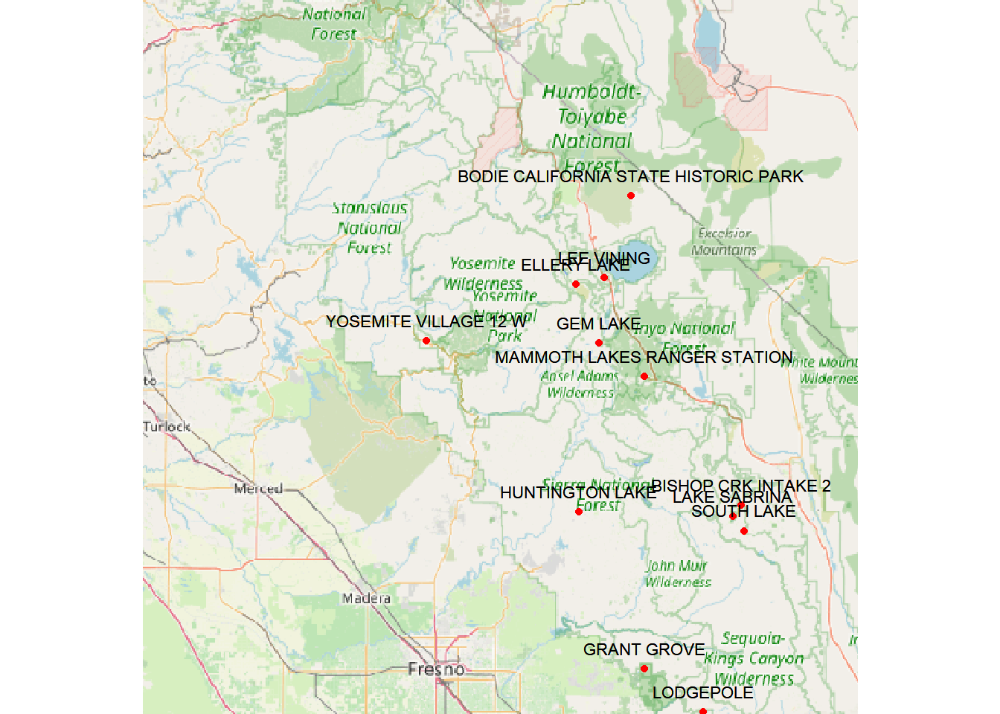

5 Other Spatial Methods & Data Experiments
5.1 Plotting filtered map data using base plot, terra::plotRGB and SpatVector data
In the Spatial Analysis chapter, we’ve mainly used tmap, but we might also want to see how we’d plot the same thing in the base plot system, which also support’s terra’s SpatVector data. So in this brief example, we’ll create a SpatVector after a data filter, then plot in the base plot system.
library(tidyverse); library(sf); library(igisci)
sierraFebpts <- st_as_sf(read_csv(ex("sierra/sierraFeb.csv")),
coords = c("LONGITUDE", "LATITUDE"), remove=FALSE, crs=4326)We might also look at how we get information about out data to decide what we might want to plot on the map. Since our goal is to filter for a range of elevations and latitudes, we might look at a couple of histograms, and we’ll use a base R plot’s parameter setting (par) to create a side by side plot (1 row, 2 columns).
par(mfrow=c(1,2)) # lets base plot functions create 2 adjacent plots (1 row, 2 columns)
hist(sierraFebpts$ELEVATION)
hist(sierraFebpts$LATITUDE)
FIGURE 5.1: Histograms of Sierra station elevations and latitudes
par(mfrow=c(1,1)) # need to reset to defaultsNow let’s continue with that information where we’ve gotten an idea about what kinds of elevations occur at the stations, and make a map that shows all stations > 2000 m elevation.
We’ll briefly use terra::plotRGB to add a basemap to a static map. Warning: the get_tiles function goes online to get the basemap data, so if you don’t have a good internet connection or the site goes down, this may fail. We’ll also modify the station names and set the text label position as pos=3, which means centered on top (see ?graphics::text).
library(terra); library(maptiles)
sierraFebpts2000 <- sierraFebpts %>%
filter(ELEVATION >= 2000)
sierraBase <- get_tiles(sierraFebpts2000)
plotRGB(sierraBase)
pts <- vect(sierraFebpts2000)
points(pts, col="red")
text(pts, labels=str_sub(pts$STATION_NAME, 1, str_locate(pts$STATION_NAME, ",")-1), cex = 0.7, pos=3)
FIGURE 5.2: Plotting filtered data (ELEVATION >= 2000)
Before we continue, let’s look at some of the parameters just used for sizing and placing text labels, and figure out what they do:
text(pts, labels=str_sub(pts$STATION_NAME, 1, str_locate(pts$STATION_NAME, ",")-1), cex = 0.7, pos=3)
- What does
cexdo? (Use?paror?textthen search within that help) - What does
posdo? (Use?text) - What did the stringr methods do?
Tweak each of the above to see the effect on the map.
Maybe there’s a way with plotRGB, but it’s limited in not apparently having a way to provide a graticule of latitude and longitude, so its use as a map is limited, and there are generally better options in tmap.